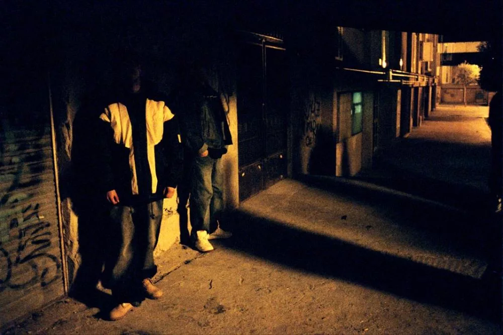

Выбор 1: Подойти к ним и спросить дорогу.
Алексей собрался с духом и подошел ближе. Мужчины обернулись. Один из них, высокий с татуировками, зловеще улыбнулся.
"Что нужно, парень?" - спросил он.
Алексей почувствовал, как сердце заколотилось, и попытался говорить уверенно:
"Простите, не подскажете, как добраться до Кольцевой улицы?"
В этот момент второй мужчина резко шагнул вперед, и Алексей понял, что совершил ошибку.
Они начали оскорблять его, а затем один из них толкнул его на землю.
Алексей попытался встать и убежать, но его схватили. Взглянув в глаза нападающим, он увидел лишь безжалостность.
Алексей не успел закричать, когда его сознание потемнело. Он потерял сознание, и это стало последним, что он помнил. (Смерть)
